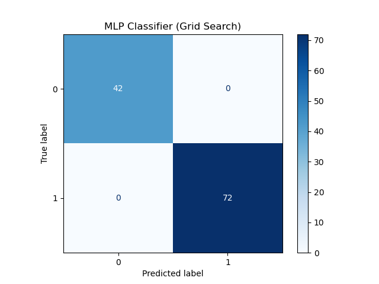
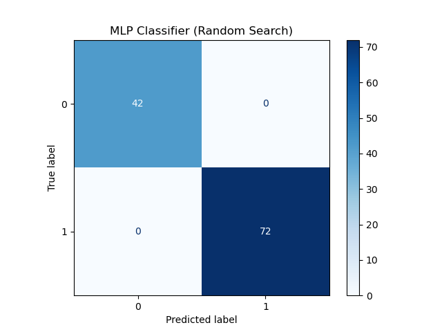

Visualizaciones del Proyecto
PCA en 3D de los datos
🔗 Ver visualización interactiva
Modelos - Grid Search

📊 Ver reporte Logistic
📊 Ver reporte MLP
Modelos - Random Search

📊 Ver reporte Logistic
📊 Ver reporte MLP
Resultados Nested CV
📄 Logistic Regression Scores
📄 MLP Classifier Scores